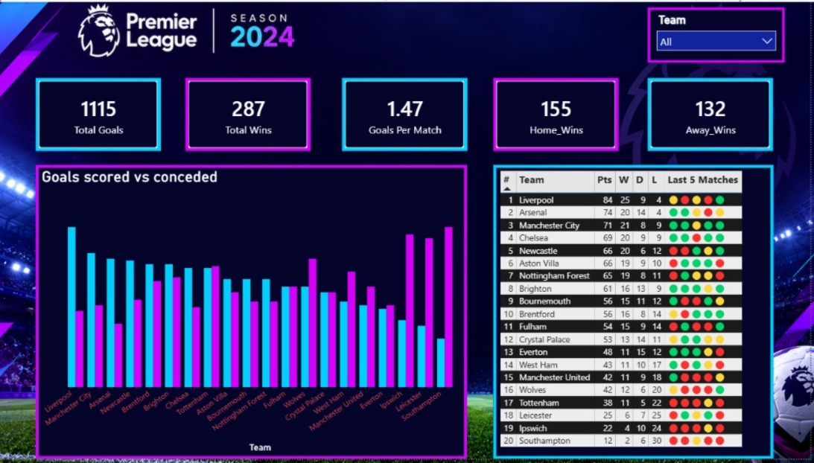
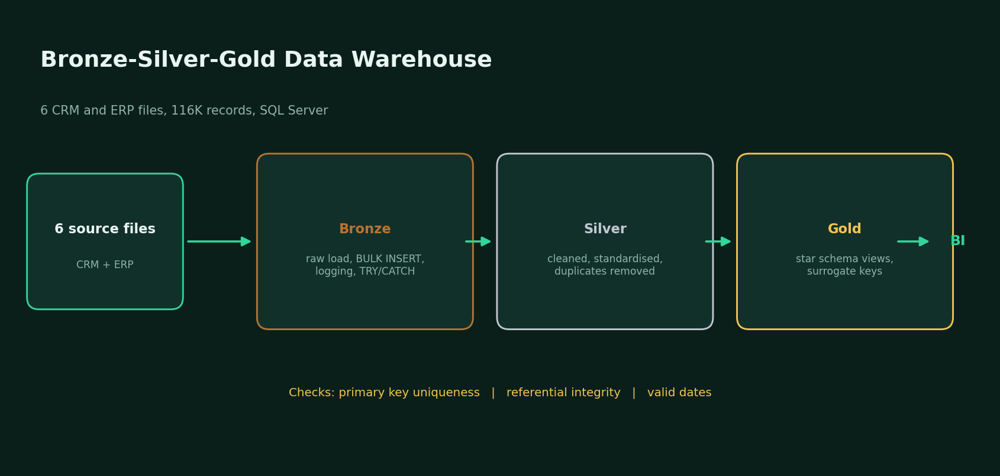
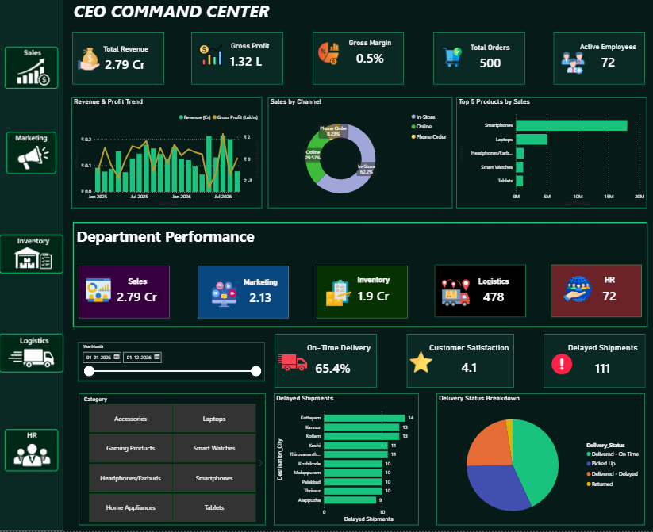
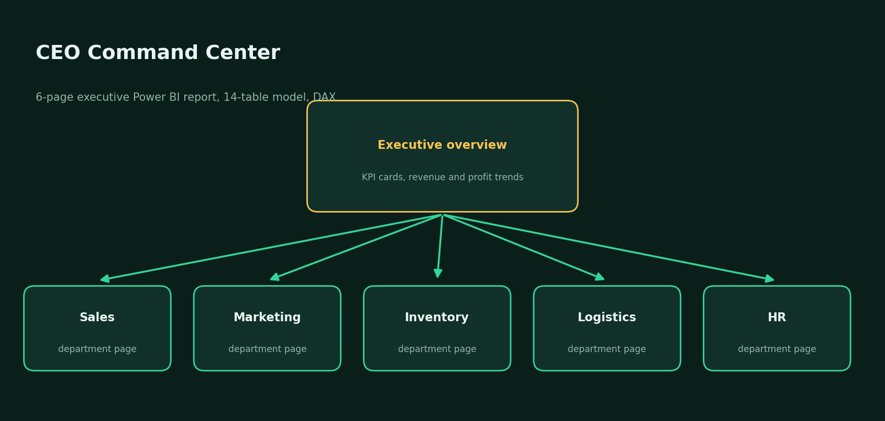
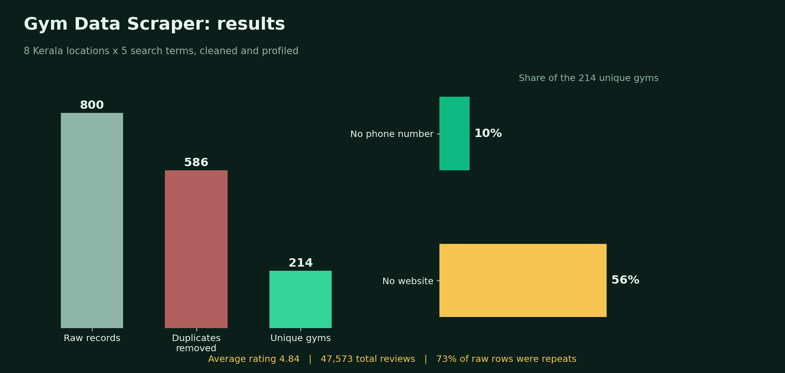
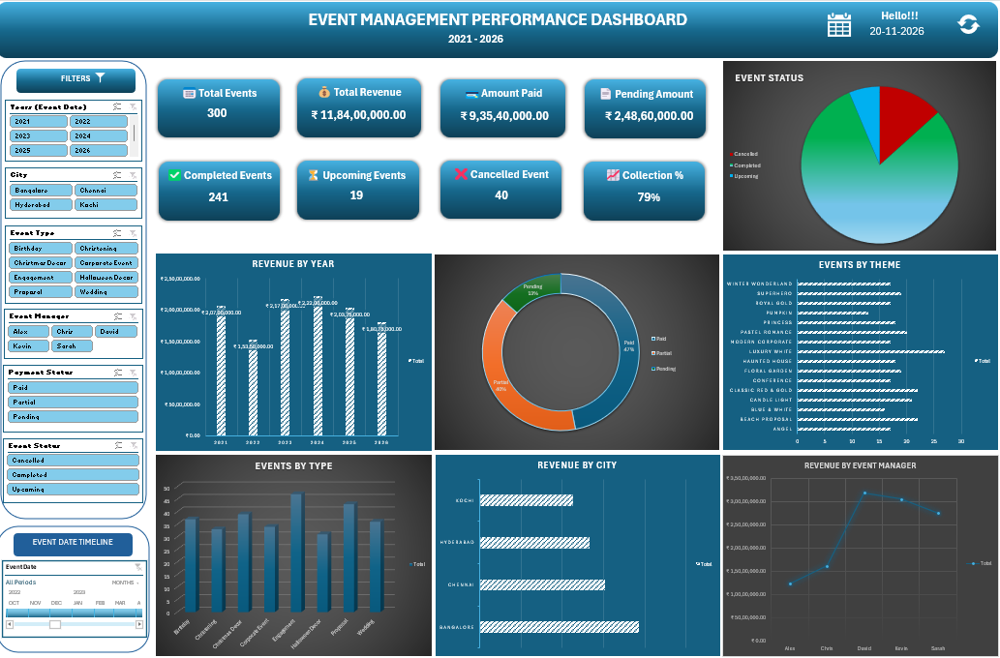

Data Analyst · Kochi, India
Romy Avril Augustine
I turn messy finance and operations data into dashboards and pipelines people can trust. Nine years across finance, operations and analytics taught me to check every number before it reaches a decision.
Power BI · SQL Server · Python · Excel · Tableau
9years of professional experience since 2017
116Krecords in one data warehouse
5end-to-end analytics projects
3freelance reporting clients
About
I have worked since 2017 in finance and operations: reconciliation, audit support and SLA/KPI reporting, including audit work with a Singapore headquarters. Since moving into analytics I build it end to end with Power BI (DAX), SQL Server, Python and Excel: extracting data, modelling it, validating it and presenting it clearly. I am looking for data analyst roles in Kochi, and remote or hybrid in Singapore, the UK and the UAE.
Skills
BI and reporting
- Power BI
- DAX
- Power Query
- Data modelling
- Dashboard design
- Excel
- Pivot tables
- INDEX-MATCH
- Tableau (working knowledge)
Data and engineering
- SQL Server
- T-SQL
- Stored procedures
- Star schema
- Data warehousing
- Python
- Pandas
- REST APIs
- ETL
- Web scraping
Finance and control
- Reconciliation
- Data audits
- Validation and QA checks
- KPI and SLA reporting
- SOPs
- Requirement gathering
Projects
01Oct to Nov 2026
EPL ETL pipeline and analytics
- Python
- Pandas
- REST API
- SQL Server
- Power BI
An end-to-end pipeline that pulls English Premier League data from the API-Football REST API into a SQL Server staging layer and dimensional warehouse, then into Power BI.

420records loaded
0issues in 3 audit checks
1,115goals tracked
- 420 records: 20 teams, 380 fixtures, 20 standings.
- Upserts update existing records, so reruns create no duplicates.
- Audit checks cover duplicate fixtures, missing team references and invalid standings.
02Aug to Sep 2026
Bronze-Silver-Gold data warehouse
- SQL Server
- T-SQL
- Stored procedures
A three-layer warehouse that consolidates 6 CRM and ERP source files into a star schema ready for reporting.

116Krecords consolidated
6source files
3warehouse layers
- Bronze loads use stored procedures, BULK INSERT, execution-time logging and TRY/CATCH error handling.
- Silver removes duplicate and null customer records (18,494 to 18,484) and standardises dates, sales figures and prices.
- Gold exposes fact and dimension views with surrogate keys, checked for key uniqueness, referential integrity, valid dates and sales calculations.
03Sep to Oct 2026
CEO Command Center dashboard
A 6-page executive report across Sales, Marketing, Inventory, Logistics and HR, with a dark theme, INR formatting, page navigation and slicers on every department page.


14tables in the model
65.4%on-time delivery
113.5%marketing ROI
- 6 dimensions (Customer, Date, Employee, Product, Store, Warehouse) and a dedicated DAX measures table.
- Sales: average order value ₹55.72K, sales growth -6.5%. Marketing: ₹1.40 crore budget across 7 channels.
- Logistics: 478 shipments, 111 delayed. Inventory: 8K units, 45 low-stock, 6 out-of-stock. HR: 72 of 80 employees active, 10% attrition, 91.9% attendance.
04Aug to Sep 2026
Gym listings data project
A scraper that collects gym listings across 8 Kerala locations using 5 search terms, then deduplicates and profiles the data.

800records scraped
214unique gyms
73%duplicates removed
- Removed 586 duplicate listings caused by overlapping searches.
- 56% of gyms have no website and 10% have no phone number.
- Average rating 4.84 across 47,573 reviews.
05Jul to Aug 2026
Event management performance dashboard
- Excel
- Pivot tables
- INDEX-MATCH
An interactive Excel dashboard across 300 events in 4 cities (Bangalore, Chennai, Hyderabad, Kochi) from 2021 to 2026.

300events analysed
79%collection rate
13%cancellation rate
- Payments: 47% paid, 40% partial, 13% pending. Events: 241 completed, 19 upcoming, 40 cancelled.
- 8 KPI cards, 7 charts, 6 slicers and a date timeline across 5 sheets.
Experience
Data Analytics Intern
Jun 2026 to nowRows & Columns, Kochi
- Cleaned, transformed and analysed business datasets with Excel, SQL and Python, with reconciliation checks before any report was built.
- Built Power BI dashboards with Power Query, relationships and DAX measures, and validated figures before sharing them.
- Built an Excel student registration workbook with a data-entry form, searchable invoices and batch search.
Freelance Data Analyst
2025 to nowPower BI and Excel reporting
- Michael & Co. Event Planners: interactive Excel dashboard tracking 300 events and revenue collection, with automated recurring reports.
- Cordial Bar: monthly Power BI reports that replaced manual reporting.
- Carmel Marine Engineering Works: monthly and annual Power BI reports built from business requirements.
Account / Finance Manager
2024 to 2026Carmel Marine Engineering Works, Kochi
- Managed invoices, quotations, payments and cash flow, and kept vendor payment and project financial records.
- Supported budgeting, cost tracking and financial analysis, with reconciliations to keep records accurate.
Senior Process Associate and Finance Processor
2017 to 2024Biipbyte Technologies, Bangalore
- Worked on audit projects and confidential assignments with the Singapore headquarters, including a visit to the Singapore office.
- Produced weekly and monthly operational and financial reports for international stakeholders.
- Handled invoice processing, reconciliations and data audits, tracked SLA/KPI performance and wrote SOPs.
Education
Bachelor of Computer Applications
St. Joseph's University, Bangalore